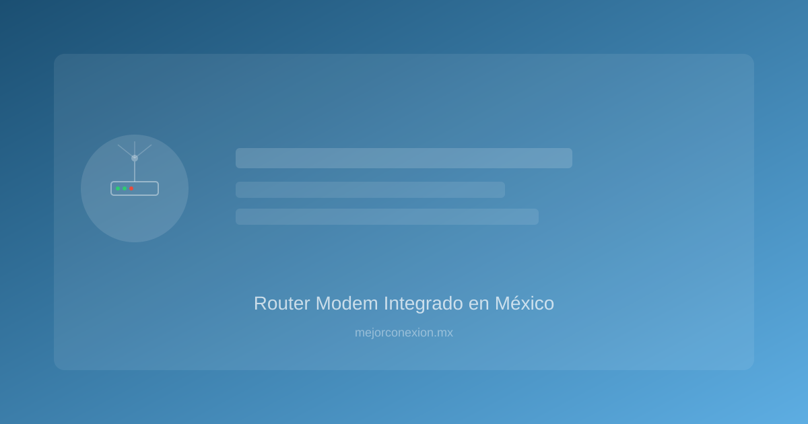

Router modem integrado en México: ¿Es suficiente para tu hogar o necesitas una actualización?
Si alguna vez has sentido la frustración de que el internet se corta justo en medio de tu serie favorita en Netflix, o cuando estás en una videollamada importante de trabajo, es muy probable que el problema no sea tu plan de datos, sino tu router modem integrado en México. En la mayoría de los hogares mexicanos, el equipo que nos entrega el proveedor de servicios (ya sea Telmex, Izzi, Totalplay o Megacable) es un dispositivo "todo en uno" que intenta cumplir dos funciones distintas: recibir la señal de internet y repartirla por toda la casa.
Pero, ¿realiza este dispositivo un buen trabajo? ¿Es realmente la mejor opción para una familia moderna con múltiples celulares, laptops, Smart TVs y dispositivos inteligentes? En este artículo, analizaremos a fondo si el equipo que tienes actualmente es suficiente o si es momento de dar el salto a una solución más robusta.
Entendiendo el concepto de router modem integrado en el contexto mexicano
Para entender por qué hablamos de un "router modem integrado", primero debemos desglosar qué hace cada parte de este aparato.
- El Módem: Es el traductor. Su función es recibir la señal que viene de la calle (ya sea por fibra óptica, cable coaxial o DSL) y convertirla en una señal digital que tus dispositivos puedan entender.
- El Router: Es el director de tráfico. Su trabajo es tomar esa señal digital y distribuirla entre todos tus dispositivos, gestionando direcciones IP y asegurando que los datos lleguen al lugar correcto.
En México, la gran mayoría de los proveedores de internet (ISP) nos entregan un equipo que combina ambas funciones en una sola caja. Esto es extremadamente conveniente porque no tienes que configurar nada complejo; simplemente lo conectas y "ya tienes internet". Sin embargo, esta conveniencia tiene un costo oculto: la capacidad de procesamiento y el alcance de la señal suelen ser limitados.
En hogares mexicanos típicos, donde las paredes suelen ser de concreto sólido o ladrillo denso, la señal de un equipo integrado suele tener dificultades para atravesar muros y llegar a las habitaciones más alejadas, lo que genera esas famosas "zonas muertas" donde el Wi-Fi simplemente desaparece.
Pros y Contras: ¿Por qué las compañías te dan este equipo y qué sacrificas?
No todo es malo con el router modem integrado en México. De hecho, para muchos usuarios, es la solución perfecta. Vamos a analizar ambos lados de la moneda para que puedas evaluar tu situación actual.
Las Ventajas (Lo bueno)
- Cero costo adicional de equipo: Al ser un servicio de arrendamiento o parte del paquete mensual, no tienes que desembolsar una cantidad fuerte de dinero al inicio.
- Simplicidad extrema: No necesitas conocimientos técnicos. Si el internet falla, solo tienes que reiniciar el aparato y, en la mayoría de los casos, el problema se resuelve.
- Soporte técnico unificado: Si el equipo falla, la responsabilidad es de tu proveedor (Telmex, Izzi, etc.). Ellos son los encargados de cambiarlo o repararlo sin que tú tengas que preocuparte por la compatibilidad.
- Configuración automática: Ya viene configurado con los parámetros de red de la compañía, lo que evita errores de autenticación.
Las Desencuentajas (Lo malo)
- Alcance limitado: Al ser un dispositivo diseñado para ser económico, sus antenas no tienen la potencia necesaria para cubrir casas grandes o de dos pisos.
- Poca capacidad de dispositivos: Un router integrado suele empezar a "sufrir" cuando conectas más de 10 o 15 dispositivos simultáneamente (celulares, tablets, focos inteligentes, Alexa, etc.).
- Falta de control y personalización: No puedes cambiar configuraciones avanzadas de seguridad, priorizar el tráfico de tu consola de juegos o crear redes de invitados con límites de velocidad específicos.
- Tecnología obsoleta: Las compañías suelen entregar equipos con estándares de Wi-Fi antiguos (como Wi-Fi 4 o 5) mientras que el mercado ya ofrece Wi-Fi 6, que es mucho más eficiente.
La gran comparativa: Router modem integrado vs. Sistema de Router y Módem por separado
Si sientes que tu conexión está al límite, quizás sea hora de considerar la separación de funciones. Aquí te presentamos una comparativa detallada para ayudarte a decidir.
| Característica | Router Modem Integrado (ISP) | Sistema Separado (Módem + Router Pro) |
|---|---|---|
| :--- | :--- | :--- |
| Costo Inicial | Muy bajo (incluido en tu mensualidad) | Más alto (requiere compra de equipo) |
| Facilidad de uso | Alta (Plug & Play) | Media (Requiere configuración inicial) |
| Cobertura | Limitada a un radio pequeño | Amplia (especialmente con sistemas Mesh) |
| Gestión de dispositivos | Básica (se satura con muchos equipos) | Avanzada (maneja +50 dispositivos sin lag) |
| Personalización | Casi nula | Total (Control parental, VPN, QoS) |
| Ideal para... | Departamentos pequeños o casas de 1 piso | Casas grandes, gamers y Smart Homes |
¿Cuándo elegir el sistema separado?
Si vives en una casa con varias plantas, si trabajas desde casa y no puedes permitirte ni un segundo de intermitencia, o si eres un entusiasta de la tecnología con una casa llena de dispositivos inteligentes, la inversión en un router independiente (conectado al módem de tu proveedor en "modo puente") es la mejor decisión que puedes tomar.
Si eres de los que juegan en línea y notas que el "lag" te arruina las partidas, te recomendamos leer nuestro artículo sobre wifi vs ethernet para jugar, donde te explicamos cómo la conexión física puede marcar la diferencia.
Señales de alerta: ¿Cuándo tu equipo actual está limitando tu productividad y diversión?
No siempre es necesario gastar dinero en equipo nuevo. Sin embargo, hay señales claras de que tu router modem integrado en México se ha convertido en un cuello de botella para tu hogar. Presta atención a estos síntomas:
- El efecto "Habitación Lejana": Si el internet vuela en la sala, pero apenas llega a tu recámara o al estudio, tu router tiene problemas de cobertura.
- Saturación en horas pico: Si notas que el internet funciona bien por la mañana, pero se vuelve extremadamente lento por la tarde/noche (cuando todos en casa están conectados), el procesador de tu equipo integrado no puede gestionar el tráfico.
- Desconexiones aleatorias: Si tus dispositivos se desconectan y vuelven a conectarse solos, es una señal de que el hardware está sufriendo para mantener las tablas de direcciones IP actualizadas.
- Latencia alta en juegos (Ping alto): Si juegas en línea y experimentas saltos bruscos de lag, incluso cuando nadie más está usando el internet, el router no está priorizando correctamente los paquetes de datos.
- Problemas con dispositivos IoT: Si tus focos inteligentes, cámaras de seguridad o asistentes de voz suelen aparecer como "fuera de línea", es porque el router no tiene la capacidad de gestionar tantas conexiones simultáneas.
Guía práctica: Cómo mejorar tu conexión sin gastar una fortuna
Si te identificas con las señales anteriores pero aún no estás listo para comprar un router de gama alta, aquí tienes algunos consejos prácticos y económicos para optimizar tu router modem integrado en México:
1. La ubicación es la clave
El error más común es esconder el módem dentro de un mueble, detrás de la televisión o en un clóset. Las ondas de Wi-Fi viajan hacia abajo y hacia los lados.
- Consejo: Coloca tu router en un lugar elevado (encima de una repisa o mueble) y en un punto central de tu casa. Evita que esté rodeado de objetos metálicos o espejos, ya que estos rebotan y bloquean la señal.
2. Evita la interferencia electromagnética
Muchos dispositivos en el hogar operan en la misma frecuencia de 2.4 GHz que el Wi-Fi.
- Consejo: Mantén tu router alejado de microondas, teléfonos inalámbricos antiguos y bases de monitores para bebés. Estos aparatos pueden "ensuciar" la señal de tu internet.
3. Usa la banda de 5 GHz (si está disponible)
La mayoría de los equipos modernos son "Dual Band". Esto significa que ofrecen dos redes: una de 2.4 GHz y otra de 5 GHz.
- Consejo: Conecta tus dispositivos que requieren mucha velocidad (Smart TV, Laptops, Consolas) a la red de 5 GHz. Deja la red de 2.4 GHz para dispositivos que no necesitan mucha velocidad pero sí largo alcance (como focos inteligentes o sensores).
4. Considera un Sistema Mesh (Malla) como paso intermedio
Si no quieres comprar un router profesional complejo, los sistemas Mesh son la solución moderna para el hogar mexicano. Consisten en 2 o 3 dispositivos pequeños que se distribuyen por la casa y crean una sola red unificada.
- Ejemplo: Puedes dejar el módem de Telmex o Izzi como está, pero conectarle un kit de TP-Link Deco o Google Nest WiFi. Esto cubrirá los puntos muertos sin necesidad de cables por toda la casa.
Conclusión: ¿Qué paso debe dar tu hogar?
En conclusión, el router modem integrado en México es una herramienta de entrada excelente para usuarios con necesidades básicas y espacios pequeños. Su facilidad de uso y bajo costo lo hacen ideal para quienes solo necesitan navegar por redes sociales, ver YouTube y revisar correos.
Sin embargo, la era del "hogar hiperconectado" ha cambiado las reglas del juego. Si tu hogar cuenta con múltiples dispositivos, si trabajas de forma remota o si el entretenimiento digital es una prioridad, el equipo que te entrega tu proveedor probablemente se haya quedado pequeño.
¿Qué hacer ahora? No tomes una decisión apresurada. Primero, analiza tu situación: ¿Tienes zonas muertas? ¿Se corta el internet cuando todos se conectan? Si la respuesta es sí, tu siguiente paso no es solo cambiar el plan de internet, sino mejorar la infraestructura de tu red.
¡Empieza hoy mismo! Revisa la ubicación de tu módem actual y muévelo a un lugar más despejado. Si tras este cambio sigues experimentando problemas, es momento de investigar opciones de routers independientes o sistemas Mesh que lleven tu conexión al siguiente nivel. Tu productividad y tu entretenimiento te lo agradecerán.